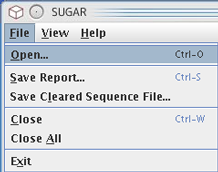
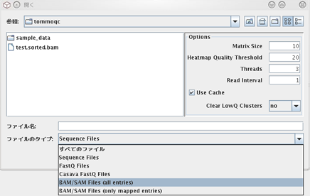
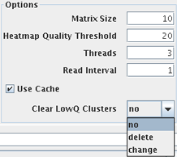

Loading Data
To open Sequence file(s), run the program and select "File > Open" and select the file name(s).

Newly opened files appear as a set of tabs at the top of the GUI screen. According to the size of the files, it may take several minutes or more to open. The SUGAR operates a queuing system in which one or more files are opened at the same time according to values of the option "threads". If threads=1, only one file will be opened at a time, and the other files are kept on hold until the opened file has been processed. If threads value is greater than 1 (1, 2, 3, ...), multiple files can be opened in parallel threads (see also the below descriptions of the options of file opening).
Current version of the SUGAR supports Illumina sequence data files of the following formats:
- Fastq (all quality encoding variants)
- Casava Fastq files*
- GZip compressed Fastq
- SAM
- BAM
- Mapped SAM/BAM

*Casava fastq format is the same as regular fastq except that the data is usually split across multiple files for a single sample. In this mode the SUGAR merges the files in a sample group and present a single report for each sample. In addition, the SUGAR automatically exclude the low-quality sequences which were flagged to be removed in the Casava fastq files from the analysis and report.
By default, the SUGAR recognizes file formats based on a suffix of the input file. Files ending in '.sam' and '.bam' are opened as SAM and BAM files (with using all sequences including mapped- and unmapped-ones), respectively. Other types of files are opened as a Fastq file. It is also possible to select the file format to load manually by using the drop-down menu of the file opening window.
File opening options
There are several options of which values can be specified in the file-opening window. A default setting is shown in the picture below.
- Matrix Size
- Resolution power of the heatmap graphs generated by the SUGAR. For example, if the value is specified as 10, then each tile is divided into 10x10=100 subtiles, which constitute a respective dot of the heatmap. If the value is 20, then the resolution power of the heatmaps is increased (20x20=400 subtiles/dots per single tile).
- Heatmap Quality Threshold
- Threshold QV of the definition of 'low-quality' in the analysis. The higher the quality threshold, the more reads will be defined as low-quality and more regions are hot-colored (~red) in the Quality heatmap. A series of values can be specified by separating by commas [ , ]. The required time for the analysis increases linearly with the number of the specified values. The default value is 20.
- Threads
- Number of files that can be processed simultaneously in a run of the SUGAR. Each thread is allocated 250MB of memory, and the users should not run more numbers of threads capable for the total size of available memory. In addition, running more than 6 threads on a 32 bit machine is not recommended.
- Read Interval
- Rate of down sampling of the data. The default setting '1' does not conduct the down sampling. If a value 'n' greater than >1 was specified, then one read per n reads would be used to the analysis by the Sugar (e.g., if n = 100, one per hundred [1/100] reads is randomly chosen and analyzed).
- This function is useful for the quick evaluation of the data quality by random sampling, but is not suitable for the data cleaning of the full data.
- Use Cache
- This check box enables caching of the result files for the loaded files. It may be useful for repeated analysis of huge-sized files, which will take more time to load.
- Clear LowQ Clusters
- In a default setting 'no', data cleaning operation can be done later with seeing results of quality assessments (see the section "Saving Cleared Sequence File"). When this option is activated by choosing 'delete' or 'change', the SUGAR saves a new sequence file in which the low-quality reads/bases (defined by the above threshold) were deleted/changed simultaneously with the quality-assessment analysis.
- The mode 'delete' removes all sequence reads within the low-quality tiles/subtiles of the original file. The mode 'change' changes all bases called in the low-quality read position of the tiles/subtiles to 'N' base. The low-quality tiles/subtiles will be colored by red in quality heatmaps shown after completion of the analysis. The output sequence file has the same format (fastq, bam or sam) as the input file with additional suffix.
|

|